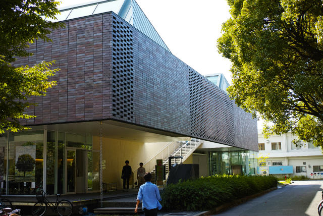

昼食
本学西キャンパスにて，土曜日と日曜日（特別営業）に1F食堂（懇親会場），土曜日に2F購買が営業しております.是非ご利用下さい．詳細は下記の通りです．
KIT HOUSE 1F食堂 カフェテリア オルタス
10(土)営業時間:11:30-14:00
11(日)営業時間:11:30-13:00
KIT HOUSE 2F購買・書籍 KIT SHOP
10(土)営業時間:11:30-17:00

KIT HOUSE 2F購買・書籍 KIT SHOP KIT HOUSE 1F食堂 カフェテリア オルタス |

1Fが懇親会場・食堂，階段上がって2Fが購買 KIT HOUSE (2010) 岸和郎(1950-) | ||
大学周辺グルメマップ：高野川を渡った東大路通り沿いに，京都有数のラーメン街があります．
構内散策
|
京都工芸繊維大学美術工芸資料館が開館しております． 生協食堂への移動や休憩の際にお立ち寄り下さい． 講演会場と懇親会場の間に位置しています． SDレビュー2015 第34回建築・環境・インテリアのドローイングと模型の入選展 ○入館料無料 |
2F渡り廊下の椅子からみえる絶景はお薦め | ||
|
講演会場と懇親会場の間には美しいケヤキ並木 |
講演会場がある東キャンパスを東に抜けると 高野川にかかる橋の上から比叡山がよく見えます |
||
|
京都工芸繊維大学3号館 （旧 京都高等工芸学校本館 1930） 本野精吾(1882-1944) |
初期モダニズム建築の1つ |
||